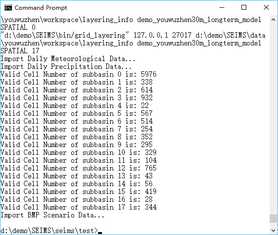

流域建模的数据预处理工作流程是从各种空间数据（如DEM、土地利用图和土壤类型图）中提取空间参数，整理纯文本数据（如降水和气象数据、站点监测数据和BMP情景分析数据），并将这些数据导入研究区域的MongoDB数据库。
**Windows用户注意事项**： 用户应确保所有SEIMS可执行文件（即*.exe 文件）已被允许通过Windows防火墙，否则可能会遇到**PermissionError**。 将seims\Firewall_for_Windows.bat复制到包含所有SEIMS可执行文件的 bin 目录中，然后右键点击 bat 文件并选择以管理员身份运行。
打开一个终端（例如Windows的CMD），输入以下命令来运行游屋圳流域的数据预处理：
数据预处理的运行日志末尾如图1所示。
![ywzpreprocessinfo]（../../img/messages-of-simple-usage-of-preprocess.jpg） 
图1 游屋圳流域建模的数据预处理运行日志
运行简单用法后，将在中间数据目录（即SEIMS\data\youwuzhen\workspace，图2）中生成数据预处理的输入配置文件（preprocess.ini），并且流域建模的数据已被导入MongoDB（图3）。配置文件的详细信息、高级用法、中间数据和流域建模数据库将在以下章节介绍。
![ywzpreprocessinfo]（../../img/directory-tree-of-intermediate-data-of-preprocessing.jpg） 
图2 游屋圳流域数据预处理后的中间数据目录
![ywzdb]（../../img/database-Youwuzhen-30m-longterm.jpg） 
图3 游屋圳流域的流域建模数据库的截图
数据预处理的简单用法包含两个步骤，如根据SEIMS的本地路径生成配置文件，以及通过高级用法执行数据预处理，高级用法将在下一节中介绍。
SEIMS使用 INI 文件作为配置文件的格式。 INI 文件是纯文本文件，其基本结构由节和选项组成（选项是一对属性和值）。行首的分号（;）或井号（#）表示注释，会被忽略。游屋圳流域的数据预处理配置内容如下所示：
数据预处理的配置文件，如游屋圳流域的的配置文件，包含五节，即PATH、 MONGODB、 CLIMATE、 SPATIAL和 OPTIONAL_PARAMETERS。
每个节中包含若干属性-值对（即选项）。节和属性的名称不应更改。注意，在Windows实现中，节和属性名称不区分大小写。
PATH：可执行文件、数据和中间工作空间的完整路径。PREPROC_SCRIPT_DIR： 数据预处理的Python脚本路径。CPP_PROGRAM_DIR： SEIMS C/C++应用程序的安装目录。MPIEXEC_DIR： MPI可执行文件的目录路径，即 C:\Program Files\Microsoft MPI\Bin。如果已添加到环境路径中，该值可以为None或注释掉。BASE_DATA_DIR： 研究区的基础数据目录。CLIMATE_DATA_DIR： （可选）包含降水数据（章节 2:2.3）和气象数据（章节 2:2.4）的气候数据路径。如果未指定（表示该选项行被注释），SEIMS将尝试在BASE_DATA_DIR\data_prepare\climate中查找气候数据。SPATIAL_DATA_DIR： （可选）空间数据的路径（章节 2:2.1.1）。如果未指定。SEIMS将尝试在BASE_DATA_DIR\data_prepare\spatial中查找空间数据。MEASUREMENT_DATA_DIR： （可选）观测数据的路径（章节 2:2.5）。如果未指定，SEIMS将尝试在BASE_DATA_DIR\data_prepare\observed中查找观测数据。BMP_DATA_DIR： （可选）BMP情景数据的路径（章节 2:2.7）。如果未指定，SEIMS将尝试在BASE_DATA_DIR\data_prepare\scenario 中查找情景数据。MODEL_DIR： 研究区域的模型路径，其中包含用于流域建模的多个配置文件。对于数据预处理，需要file.in 和 file.out， 校准参数 param.cali 是可选的。 模型文件夹的文件结构细节将在章节 2:4.2中介绍。TXT_DB_DIR： （可选）额外查找表的路径（章节 2:2.6）。如果未指定，SEIMS将尝试在 BASE_DATA_DIR\data_prepare\lookup 中查找查找表。WORKING_DIR： 可选）用于中间数据的工作空间。如果未指定，SEIMS将使用默认路径BASE_DATA_DIR\workspace。MONGODB： MongoDB相关设置。HOSTNAME： MongoDB服务器的IP地址，例如127.0.0.1（即localhost）。PORT： MongoDB服务器的端口，默认为27017。SpatialDBName： 在MongoDB服务器中创建的研究区域主空间数据库的名称（图2：3 3）。该名称**必须**与 MODEL_DIR 的文件夹名称相同。ClimateDBName： 在MongoDB服务器中创建的水文气候数据库的名称（图2：3 3）。BMPScenarioDBName： 在MongoDB服务器中创建的BMP情景数据库的名称（图2：3 3）。CLIMATE： 位于CLIMATE_DATA_DIR中的气候数据文件名。HydroClimateVarFile： 气候数据变量的类型和单位（章节 2:2.4）。MeteoSiteFile： 气象站的空间信息（章节 2:2.4）。PrecSiteFile： 降水站的空间信息（章节 2:2.3.1）。MeteoDataFile： 气象数据（章节 2:2.4）。PrecDataFile： 降水数据（章节 2:2.3.2）。thiessenIdField： （可选）气候站泰森多边形文件中的字段ID（章节 2:2.2），默认为ID。SPATIAL： 位于SPATIAL_DATA_DIR 和 TXT_DB_DIR中的空间数据文件名·dem： 原始DEM数据。outlet_file： （可选）研究区域的出口文件。PrecSitesThiessen： 降水站的泰森多边形文件。MeteoSitesThiessen： 气象站的泰森多边形文件。landuseFile： 土地利用类型的栅格文件。landcoverInitFile： 初始土地覆盖参数的查找表（章节 2:2.6.2）。soilSEQNFile： 土壤序列的栅格文件。soilSEQNText： 土壤特性的查找表（章节 2:2.6.1）。field_partition_thresh： （可选）划分水文连通地块的阈值（Wu等，2018）。可以指定多个阈值，如10,15,20。以 fields_<threshold>.tif（如）命名的划分的地块将导入主空间数据库（即SpatialDBName）。同时，将在 MODEL_DIR生成一个名为connected_field_units_updown_<threshold>.json 的json格式文件，描述地块的上下游关系和土地利用信息等。水文连通地块可用作BMP情景分析的BMP配置单元（参见章节 2:8）。OPTIONAL_PARAMETERS： 可选参数。D8AccThreshold： 用于河流和子流域划分的流量累积阈值，默认为0。在这种情况下，TauDEM的drop分析功能将自动确定阈值。np： 基于MPI并行计算的C++应用程序（例如TauDEM的函数）的进程数，默认为4。D8DownMethod： 河流向下距离的计算方法，可用值为pythagoras（勾股）、horizontal（水平）、vertical（垂直）和surface（表面），或分别简化为p、h、v 和 s。默认值为surface或s。详情可参见http：//hydrology.usu.edu/taudem/taudem5/help53/DInfinityDistanceDown.html。dorm_hr： 休眠期的日长阈值小时数，默认为-1。T_base： 热量单位计算的基温（摄氏度），默认为0。imperviousPercInUrbanCell： 城市单元的不透水百分比，默认为0.3。defaultLanduse： NoData区域的默认土地利用类型，**必须**存在于准备的landcoverInitFile中。defaultSoil： NoData区域的默认土壤序列类型，**必须**存在于准备的soilSEQNFile中。数据预处理的Python脚本位于 SEIMS/seims/preprocess中。脚本名称的前缀根据功能进行区分，即sd_用于流域的空间离散化（例如子流域的划分）， sp_用于空间参数的提取（例如根据SWAT模型的数据库和附加查找表提取土地利用和土壤相关参数，章节 2:2.6）， hydro_ 用于水文和气候数据的处理，db_ 用于MongoDB数据库的输入和/或输出。 main.py 是整个数据预处理流程的入口。每个脚本可以通过统一的格式独立执行： python <script_name> -ini </path/to/configuration-file>。 例如，运行整个工作流程：
如果需要更新BMP情景相关数据，只需运行导入BMP情景数据到MongoDB的脚本：
整个预处理流程可以分为两个主要步骤，即流域的空间离散化（即sd_delineation.py）和MongoDB数据库的创建（即sd_delineation.py）。强烈建议用户先将D8AccThreshold设置为0来运行sd_delineation.py ，以获得子流域的初步划分。自动划分的子流域可能过于细难以满足流域建模所需的适当空间尺度。因此，用户可以根据流量累积栅格（即SEIMS\data\youwuzhen\workspace\taudem_delineated\accTauD8WithWeight.tif，有关中间数据的更多信息将在后续章节中描述）手动调整合适的阈值。在确定最终的阈值并更新配置文件中的 D8AccThreshold 值后，需要重新运行 main.py 完成整个预处理工作。
请注意，当前数据预处理工具的实现是为了支持现有的SEIMS流域过程模块。这意味着，如果一个新开发模块所需的输入数据无法从数据库或其他模块的输出中获得，则需要新增相应的预处理工具。更多信息请参考“章节 4:1 开发新的流域过程模块”。
如图2所示，数据预处理的中间数据被组织成七个文件夹：
taudem_delineated： 基于TauDEM进行的子流域空间划分的原始结果和中间数据，包括流量累积数据（accTauD8WithWeight.tif），子流域划分数据（subbasinTauM.tif）以及由subbasinTauM.tif掩膜的D8流向数据（<tt>flowDirTauM.tif）等。lookup_tables： 基于SWAT模型的土地利用数据库查找表，用于生成与土地利用类型相关的参数。 +TODO： 在当前版本的SEIMS中，土地利用和土壤类型相关的空间参数（栅格数据）作为单独文件（即MongoDB中的GridFS）进行准备和导入。这种解决方案会导致SEIMS主程序读取数据的性能较低。因此，在未来版本中，应使用查找表而不是分开的栅格或基于数组的参数。
spatial_raster： 所有被划定的流域边界（即subbasinTauM.tif）掩膜的空间参数（栅格数据）。spatial_shp： 整个流域和每个子流域的空间矢量数据，例如：reach_<N>.shp（N 代表子流域编号，从1开始，reach.shp 是整个流域的文件）、subbasin_<N>.shp、basin.shp 和 outlet.shp。layering_info： 每个基本模拟单元（如栅格单元和不规则形状）的流入流出索引，以及基于流向算法的 UPDOWN（默认，源头分层）和 DOWNUP （出口分层）方法的routing layers。metis_output： 由 METIS 软件进行分组，用于基于子流域级别的MPI并行计算的静态任务调度。例如，SEIMS\data\youwuzhen\workspace\metis_output\kmetis 中的 metis.part.4 结果为3 0 2 1 1 3 1 3 2 0 2 0 2 1 1 1 3，表示游屋圳流域的17个子流域将被分配到四个进程中，具体为：子流域ID（2, 10, 12）、 （4, 5, 7, 14, 15, 16）、 （3, 9, 11, 13）和 （1, 6, 8, 17）runtime_log： 运行日志（以 status_为前缀）以及若干SEIMS C++应用程序的输入配置文件（以 config_为前缀）。流域建模数据库的结构截图如图2:3 3所示。根据数据预处理配置文件INI文件（Section 2:3.2）中的特定名称创建了三个数据库。预处理后的数据被组织成数据库中的不同集合（或称为表）。
demo_youwuzhen30m_longterm_model： 研究区的主要空间数据库FILE_IN 和 FILE_OUT。PARAMETERS。REACHES，包括几何参数、默认的化学参数以及用于基于MPI的并行计算任务调度的子流域组等。SITELIST。BMPDATABASE。SPATIAL。CROPLOOKUP、FERTILIZERLOOKUP、LANDUSELOOKUP、SOILLOOKUP、TILLAGELOOKUP和 URBANLOOKUP。demo_youwuzhen30m_HydroClimate： 水文气象数据库SITES。DATA_VALUES） 和水文监测数据（MEASUREMENT）。ANNUAL_STATS。VARIABLES。demo_youwuzhen30m_Scenario： BMP情景数据库BMP_INDEX。BMP_SCENARIOS。SEIMS\data\youwuzhen\data_prepare\scenario）中的纯文本文件名，如在demo学习中的 PLANT_MANAGEMENT和 AREAL_STRUCT_MANAGEMENT。Also see introduction of the Python package seims.preprocess package
AutoFuzSlpPos Python package: seims.preprocess.autofuzslppos package
Predefined database: Predefined database